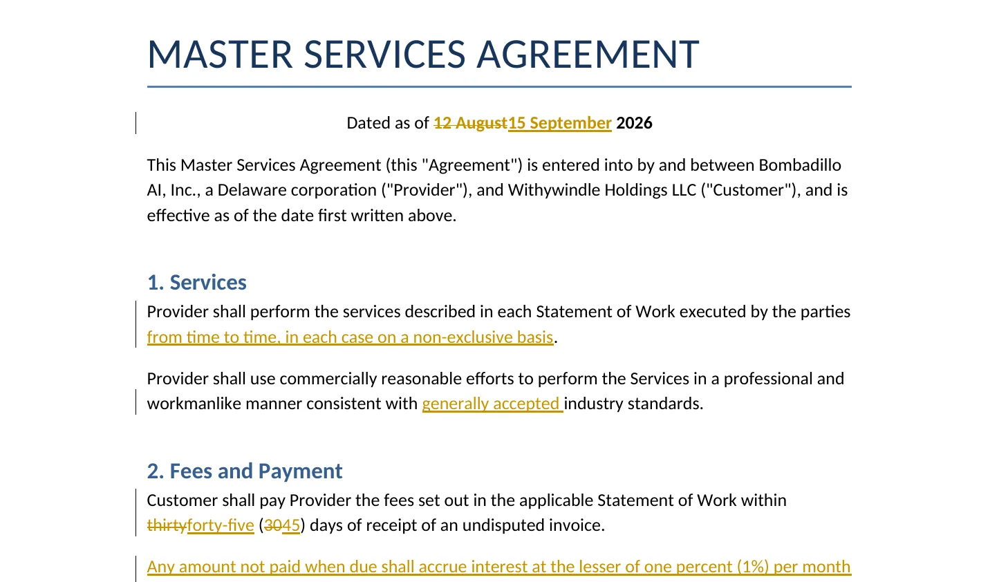
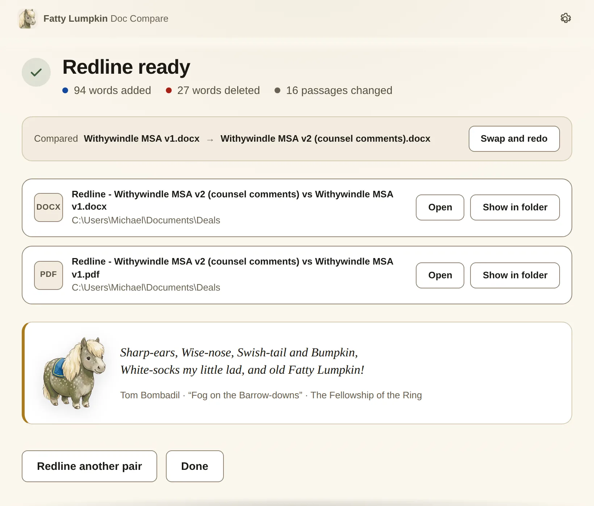
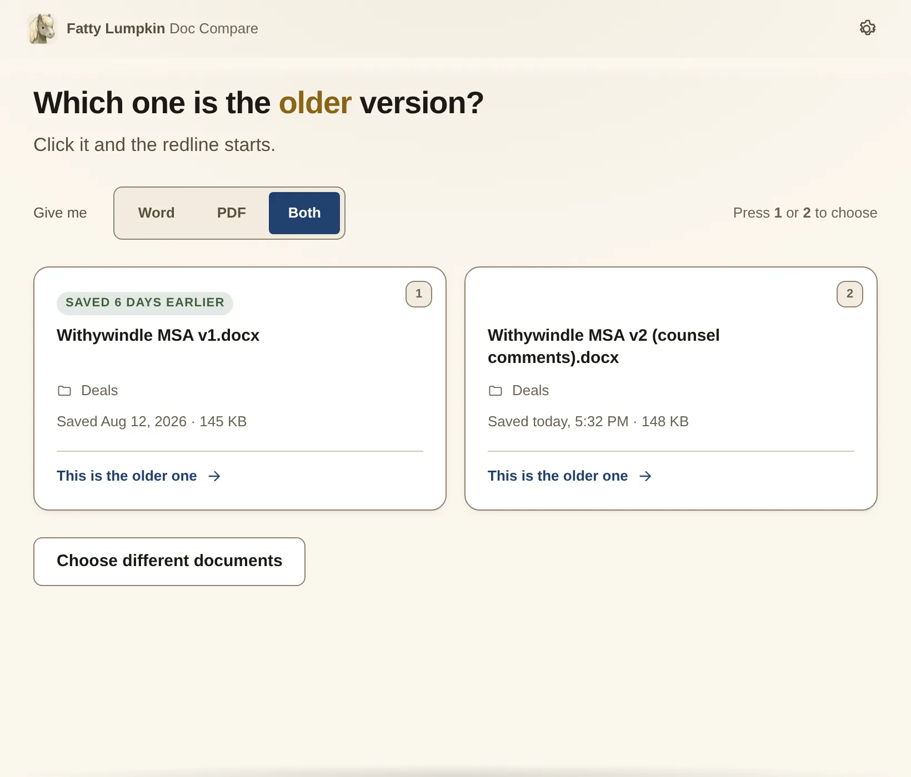
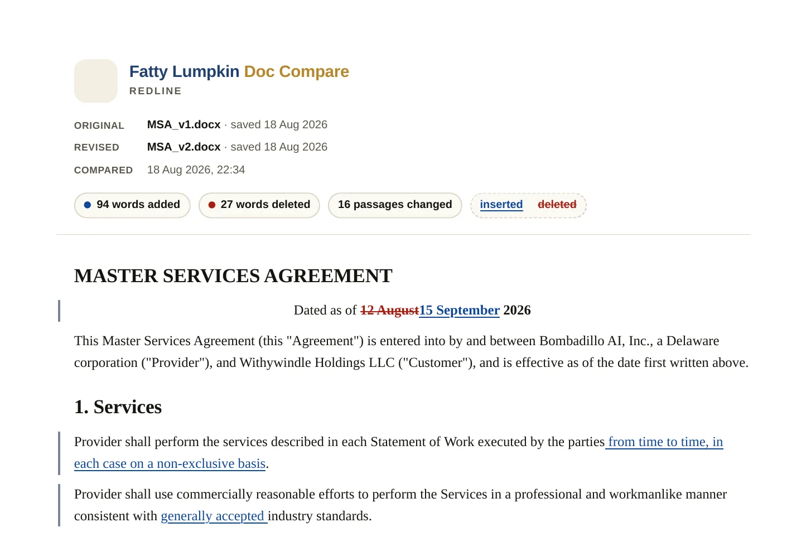

A real track-changes document
Native Word revisions you can accept or reject one at a time. Accepting every change gives you the new document exactly; rejecting every change gives you the old one back.

Mac & Windows · free · nothing leaves your computer
Select the old draft and the new one, right-click, choose Redline with Fatty Lumpkin. Seconds later you have a proper track-changes document, a marked-up PDF, or both — sitting next to the originals.
On a Mac and not sure which build? Apple menu → About This Mac — “Apple M1” or later means Apple Silicon.
Version 1.0.0 · macOS 12 or later · Windows 10 or later. The installers are not code-signed, so each operating system asks once whether you meant it — here is exactly what to click.

No compare settings. No “which parts do you want to include”. No uploading a confidential draft to a website.
In Finder or File Explorer, click the old version, then ⌘/Ctrl-click the new one.
Then pick Word (track changes), PDF, or both straight from the menu.
One click. Fatty Lumpkin badges whichever document was saved earlier; you click that one, and the redline opens itself.

Word level, not paragraph level. If one number moved, one number is marked — not the whole clause.
Native Word revisions you can accept or reject one at a time. Accepting every change gives you the new document exactly; rejecting every change gives you the old one back.

Additions in blue underline, removals in red strikethrough, change bars in the margin, and a header that counts everything. For sending to someone who just wants to read it.

Nothing is uploaded. The comparison runs entirely on your own machine. There is no account, no server, and the app makes no network requests at all.
Fatty Lumpkin isn’t code-signed yet, so both operating systems ask once whether you meant it. Here is precisely what you’ll see.
On Windows 11 the entry lives under Show more options in the right-click menu. Pressing Shift+F10 instead of right-clicking opens that menu directly.
If macOS says the app “is damaged and can’t be opened”, that is the quarantine flag your browser attached, not a broken download. Open Terminal and run:
xattr -dr com.apple.quarantine "/Applications/Fatty Lumpkin Doc Compare.app"
then open the app again. Not sure which Mac you have? Apple menu → About This Mac; “Apple M1” or later means Apple Silicon.
No. The whole comparison happens inside the app on your own machine. There is no account, no server, and the app makes no network requests. Your drafts never leave the computer they are on.
They are real Word revisions, and Word colours revisions by author using your own Track Changes settings — that is what makes them acceptable and rejectable one at a time. The PDF is where the colours are fixed: blue underline for additions, red strikethrough for deletions.
Managed Windows fleets often refuse unsigned executables outright, and some block .exe downloads at the proxy. There is no way around that from this page — ask your IT desk to allow Fatty-Lumpkin-Doc-Compare-Setup-1.0.0.exe, and point them at the source, which is public and readable. Signing certificates are the long-term fix and are on the list.
There is no auto-update. When there is a new version, this page and its version number change; download the new installer and run it over the top. Your settings and right-click menu survive the upgrade.
Moves are shown as a deletion in the old place and an insertion in the new one, which is what most people find easiest to read. There is no separate “moved” treatment.
Not directly — the old binary .doc format isn’t supported. Open it in Word and use Save As → Word Document (.docx) first. The app tells you this if you try.
Next to the newer document, named Redline - NEW vs OLD.docx. If that folder is read-only the app offers to put them on your Desktop instead, and you can make that the default in Settings.
Fatty Lumpkin is Tom Bombadil’s pony in The Lord of the Rings — stout, unbothered, and reliably where he said he’d be. Every finished redline comes with a line from one of Tom’s songs. It costs nothing and it is nice.
Yes — Settings → Right-click menu → Remove. On Windows it only ever writes to your own user’s registry; on macOS it drops three files in ~/Library/Services and takes them away again.